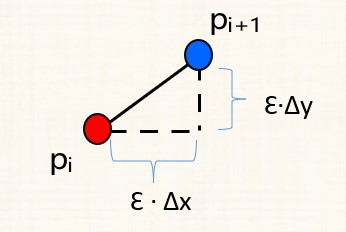

<!DOCTYPE html>
<html>
<head><meta name="generator" content="Hexo 3.8.0">
  <meta charset="utf-8">

  <!-- PACE Progress Bar START -->
  
    <script src="https://raw.githubusercontent.com/HubSpot/pace/v1.0.2/pace.min.js"></script>
    <link rel="stylesheet" href="https://github.com/HubSpot/pace/raw/master/themes/orange/pace-theme-flash.css">
  
  

  <!-- PACE Progress Bar START -->

  
  <title>opengl-3:点和直线 | HiSteveHu</title>
  <meta name="viewport" content="width=device-width, initial-scale=1, maximum-scale=1">
  
  <meta name="keywords" content="教程">
  
  
  
  
  <meta name="description" content="导言在之前的教程中，我们已经实现了空窗口以及三角形的渲染。然而只是略知一二，对于渲染的具体细节，比如三角形边的绘制，我们还不太清楚。从这节开始，我们将更加深入、系统地入门图形学，先从点和直线开始">
<meta name="keywords" content="教程">
<meta property="og:type" content="article">
<meta property="og:title" content="OpenGL-3:点和直线">
<meta property="og:url" content="https://histevehu.com/passages/OpenGL-PointandLine/index.html">
<meta property="og:site_name" content="HiSteveHu">
<meta property="og:description" content="导言在之前的教程中，我们已经实现了空窗口以及三角形的渲染。然而只是略知一二，对于渲染的具体细节，比如三角形边的绘制，我们还不太清楚。从这节开始，我们将更加深入、系统地入门图形学，先从点和直线开始">
<meta property="og:locale" content="en">
<meta property="og:image" content="https://histevehu.com/passages/OpenGL-PointandLine/0.jpg">
<meta property="og:image" content="https://histevehu.com/passages/OpenGL-PointandLine/1.jpg">
<meta property="og:image" content="https://histevehu.com/passages/OpenGL-PointandLine/2.jpg">
<meta property="og:image" content="https://histevehu.com/passages/OpenGL-PointandLine/3.jpg">
<meta property="og:updated_time" content="2020-01-29T02:30:01.814Z">
<meta name="twitter:card" content="summary">
<meta name="twitter:title" content="OpenGL-3:点和直线">
<meta name="twitter:description" content="导言在之前的教程中，我们已经实现了空窗口以及三角形的渲染。然而只是略知一二，对于渲染的具体细节，比如三角形边的绘制，我们还不太清楚。从这节开始，我们将更加深入、系统地入门图形学，先从点和直线开始">
<meta name="twitter:image" content="https://histevehu.com/passages/OpenGL-PointandLine/0.jpg">
  
    <link rel="alternate" href="/atom.xml" title="HiSteveHu" type="application/atom+xml">
  
  <link rel="icon" href="/css/images/favicon.ico">
  
    <link href="//fonts.googleapis.com/css?family=Source+Code+Pro" rel="stylesheet" type="text/css">
  
  <link href="https://fonts.googleapis.com/css?family=Open+Sans|Montserrat:700" rel="stylesheet" type="text/css">
  <link href="https://fonts.googleapis.com/css?family=Roboto:400,300,300italic,400italic" rel="stylesheet" type="text/css">
  <link href="https://cdn.bootcss.com/font-awesome/4.6.3/css/font-awesome.min.css" rel="stylesheet">
  <style type="text/css">
    @font-face{font-family:futura-pt;src:url(https://use.typekit.net/af/9749f0/00000000000000000001008f/27/l?subset_id=2&fvd=n5) format("woff2");font-weight:500;font-style:normal;}
    @font-face{font-family:futura-pt;src:url(https://use.typekit.net/af/90cf9f/000000000000000000010091/27/l?subset_id=2&fvd=n7) format("woff2");font-weight:500;font-style:normal;}
    @font-face{font-family:futura-pt;src:url(https://use.typekit.net/af/8a5494/000000000000000000013365/27/l?subset_id=2&fvd=n4) format("woff2");font-weight:lighter;font-style:normal;}
    @font-face{font-family:futura-pt;src:url(https://use.typekit.net/af/d337d8/000000000000000000010095/27/l?subset_id=2&fvd=i4) format("woff2");font-weight:400;font-style:italic;}</style>
    
  <link rel="stylesheet" id="athemes-headings-fonts-css" href="//fonts.googleapis.com/css?family=Yanone+Kaffeesatz%3A200%2C300%2C400%2C700&amp;ver=4.6.1" type="text/css" media="all">
  <link rel="stylesheet" href="/css/style.css">

  <script src="https://code.jquery.com/jquery-3.1.1.min.js"></script>

  <!-- Bootstrap core CSS -->
  <link rel="stylesheet" href="https://netdna.bootstrapcdn.com/bootstrap/3.0.2/css/bootstrap.min.css">
  <link rel="stylesheet" href="/css/hiero.css">
  <link rel="stylesheet" href="/css/glyphs.css">
  
    <link rel="stylesheet" href="/css/vdonate.css">
  

  <!-- Custom CSS -->
  <link rel="stylesheet" href="/css/my.css">
  <!-- Google Adsense -->
  
  <script async src="//pagead2.googlesyndication.com/pagead/js/adsbygoogle.js"></script>
  <script>
      (adsbygoogle = window.adsbygoogle || []).push({
          google_ad_client: "ca-pub-0123456789ABCDEF",
          enable_page_level_ads: true
      });
  </script>
  
</head>
</html>
<script>
var themeMenus = {};

  themeMenus["/"] = "Home"; 

  themeMenus["/archives"] = "Archives"; 

  themeMenus["/categories"] = "Categories"; 

  themeMenus["/tags"] = "Tags"; 

  themeMenus["/about"] = "About"; 

</script>


  <body data-spy="scroll" data-target="#toc" data-offset="50">


  <header id="allheader" class="site-header" role="banner">
  <div class="clearfix container">
      <div class="site-branding">

          <h1 class="site-title">
            
              <a href="/" title="HiSteveHu" rel="home"> HiSteveHu </a>
            
          </h1>

          
            <div class="site-description">SteveHu&#39;s Personal Official Website</div>
          
            
          <nav id="main-navigation" class="main-navigation" role="navigation">
            <a class="nav-open">Menu</a>
            <a class="nav-close">Close</a>
            <div class="clearfix sf-menu">

              <ul id="main-nav" class="nmenu sf-js-enabled">
                    
                      <li class="menu-item menu-item-type-custom menu-item-object-custom menu-item-home menu-item-1663"> <a class="" href="/">Home</a> </li>
                    
                      <li class="menu-item menu-item-type-custom menu-item-object-custom menu-item-home menu-item-1663"> <a class="" href="/archives">Archives</a> </li>
                    
                      <li class="menu-item menu-item-type-custom menu-item-object-custom menu-item-home menu-item-1663"> <a class="" href="/categories">Categories</a> </li>
                    
                      <li class="menu-item menu-item-type-custom menu-item-object-custom menu-item-home menu-item-1663"> <a class="" href="/tags">Tags</a> </li>
                    
                      <li class="menu-item menu-item-type-custom menu-item-object-custom menu-item-home menu-item-1663"> <a class="" href="/about">About</a> </li>
                    
              </ul>
            </div>
          </nav>


      </div>
  </div>
</header>


  <div id="originBgDiv" style="background: #fff; width: 100%;">

      <div style="max-height:600px; overflow: hidden;  display: flex; display: -webkit-flex; align-items: center;">
        
      </div>

  </div>

  <script>
  function setAboutIMG(){
      var imgUrls = "css/images/pose.jpg,https://source.unsplash.com/collection/954550/1920x1080".split(",");
      var random = Math.floor((Math.random() * imgUrls.length ));
      if (imgUrls[random].startsWith('http') || imgUrls[random].indexOf('://') >= 0) {
        document.getElementById("originBg").src=imgUrls[random];
      } else {
        document.getElementById("originBg").src='/' + imgUrls[random];
      }
  }
  bgDiv=document.getElementById("originBgDiv");
  if(location.pathname.match('about')){
    setAboutIMG();
    bgDiv.style.display='block';
  }else{
    bgDiv.style.display='none';
  }
  </script>


  <div id="container">
    <div id="wrap">
            
      <div id="content" class="outer">
        
          <section id="main" style="float:none;"><article id="post-OpenGL-PointandLine" style="width: 66%; float:left;" class="article article-type-post" itemscope="" itemprop="blogPost">
  <div id="articleInner" class="clearfix post-1016 post type-post status-publish format-standard has-post-thumbnail hentry category-template-2 category-uncategorized tag-codex tag-edge-case tag-featured-image tag-image tag-template">
    
    
      <header class="article-header">
        
  
    <h1 class="thumb" itemprop="name">
      OpenGL-3:点和直线
    </h1>
  

      </header>
    
    <div class="article-meta">
      
	Posted on <a href="/passages/OpenGL-PointandLine/" class="article-date">
	  <time datetime="2020-01-20T09:52:35.000Z" itemprop="datePublished">January 20, 2020</time>
	</a>

      
	<span id="busuanzi_container_page_pv">
	  本文总阅读量<span id="busuanzi_value_page_pv"></span>次
	</span>

    </div>
    <div class="article-entry" itemprop="articleBody">
      
        <h3 id="导言"><a href="#导言" class="headerlink" title="导言"></a><strong>导言</strong></h3><p>在之前的教程中，我们已经实现了空窗口以及三角形的渲染。然而只是略知一二，对于渲染的具体细节，比如三角形边的绘制，我们还不太清楚。从这节开始，我们将更加深入、系统地入门图形学，先从点和直线开始</p>
<a id="more"></a>
<h3 id="概念"><a href="#概念" class="headerlink" title="概念"></a><strong>概念</strong></h3><h4 id="光栅化（扫描转换）"><a href="#光栅化（扫描转换）" class="headerlink" title="光栅化（扫描转换）"></a><strong>光栅化（扫描转换）</strong></h4><p>分为两步(以三角形为例)：</p>
<ol>
<li><p>输入三角形的定义:（1）几何信息：三个顶点的坐标（2）属性信息：颜色、光照、纹理等。</p>
</li>
<li><p>根据图形的定义在点阵单元上确定最佳逼近于图形的像素集。逼近的过程本质可以认为是连续量向离散量的转换</p>
</li>
<li><p>给像素指定合适的颜色值</p>
<p></p>
</li>
</ol>
<h3 id="直线扫描转换算法分类"><a href="#直线扫描转换算法分类" class="headerlink" title="直线扫描转换算法分类"></a><strong>直线扫描转换算法分类</strong></h3><p>逐点比较法、正负法、<strong>数值微分算法、Bresenham算法</strong></p>
<p>接下来，我们主要了解数值微分算法</p>
<h3 id="数值微分法（Digital-Differential-Analyzer-DDA）"><a href="#数值微分法（Digital-Differential-Analyzer-DDA）" class="headerlink" title="数值微分法（Digital Differential Analyzer,DDA）"></a><strong>数值微分法（Digital Differential Analyzer,DDA）</strong></h3><h4 id="理论"><a href="#理论" class="headerlink" title="理论"></a><strong>理论</strong></h4><p><br>$$<br>\begin{cases} x_{i+1}=x_i+\varepsilon\cdot\Delta_x \\y_{i+1}=y_i+\varepsilon\cdot\Delta_y\end{cases}<br>,精度无限高：\varepsilon无限小<br>$$</p>
<p>$$<br>令\varepsilon=\frac{1}{max(|\Delta_x|,|\Delta_y|)}<br>$$</p>
<p>使得ε△x或ε△y中会有一个变成<strong>单位步长</strong>。算法在<strong>最大位移方向</strong>上，<strong>每次总是走一步：</strong></p>
<ul>
<li><p>情况一：斜率绝对值小于1：<strong>ε=1/|△x|,其中对y(i+1)结果四舍五入</strong></p>
<p></p>
<blockquote>
<p>$$<br>\because\varepsilon\cdot\Delta_x=1<br>\therefore \varepsilon=\frac{1}{\Delta_x}\<br>\therefore y_{i+1}=y_i+\varepsilon\cdot\Delta_y=y_i+\frac{\Delta_y}{\Delta_x}=y_i\pm k<br>$$</p>
</blockquote>
</li>
<li><p>情况二：斜率绝对值大于1：<strong>ε=1/|△y|,其中对x(i+1)结果四舍五入</strong></p>
<p></p>
<blockquote>
<p>$$<br>\because\varepsilon\cdot\Delta_y=1<br>\therefore \varepsilon=\frac{1}{\Delta_y}\<br>\therefore x_{i+1}=x_i+\varepsilon\cdot\Delta_x=x_i+\frac{\Delta_x}{\Delta_y}=x_i\pm \frac{1}{k}<br>$$</p>
</blockquote>
</li>
</ul>
<h4 id="代码"><a href="#代码" class="headerlink" title="代码"></a><strong>代码</strong></h4><figure class="highlight c++"><table><tr><td class="gutter"><pre><span class="line">1</span><br><span class="line">2</span><br><span class="line">3</span><br><span class="line">4</span><br><span class="line">5</span><br><span class="line">6</span><br><span class="line">7</span><br><span class="line">8</span><br><span class="line">9</span><br><span class="line">10</span><br><span class="line">11</span><br><span class="line">12</span><br><span class="line">13</span><br><span class="line">14</span><br><span class="line">15</span><br><span class="line">16</span><br><span class="line">17</span><br><span class="line">18</span><br><span class="line">19</span><br><span class="line">20</span><br></pre></td><td class="code"><pre><span class="line"><span class="function"><span class="keyword">void</span> <span class="title">DDALine</span><span class="params">(<span class="keyword">int</span> x0,<span class="keyword">int</span> y0,<span class="keyword">int</span> x1,<span class="keyword">int</span> y1)</span></span></span><br><span class="line"><span class="function"></span>&#123;</span><br><span class="line">	<span class="keyword">int</span> dx,dy,eps1,k;</span><br><span class="line">    <span class="keyword">float</span> x,y,xIncre,yIncre;</span><br><span class="line">    dx=x1-x0; dy=y1-y0;</span><br><span class="line">    x=x0; y=y0;</span><br><span class="line">    <span class="comment">//最大位移方向判断,即得max(|Δx|,|Δy|)</span></span><br><span class="line">    If (<span class="built_in">abs</span>(dx)&gt;<span class="built_in">abs</span>(dy)) eps1=<span class="built_in">abs</span>(dx);</span><br><span class="line">    <span class="keyword">else</span> eps1=<span class="built_in">abs</span>(dy);</span><br><span class="line">    <span class="comment">//x、y方向上增量的计算，即得ε×Δd</span></span><br><span class="line">    xIncre=(<span class="keyword">float</span>)dx/(<span class="keyword">float</span>)eps1;</span><br><span class="line">    yIncre=(<span class="keyword">float</span>)dy/(<span class="keyword">float</span>)eps1;</span><br><span class="line">    <span class="comment">//输出最佳逼近的像素点</span></span><br><span class="line">    <span class="keyword">for</span> (k=<span class="number">0</span>;k&lt;=eps1;k++)</span><br><span class="line">    &#123;</span><br><span class="line">        putpixel((<span class="keyword">int</span>)(x+<span class="number">0.5</span>),(<span class="keyword">int</span>)(y+<span class="number">0.5</span>));<span class="comment">//在对应坐标处输出像素点</span></span><br><span class="line">        x+=xIncre;</span><br><span class="line">        y+=yIncre;</span><br><span class="line">    &#125;</span><br><span class="line">&#125;</span><br></pre></td></tr></table></figure>
      
    </div>
    <footer class="entry-meta entry-footer">
      
	<span class="ico-folder"></span>
    <a class="article-category-link" href="/categories/OpenGL/">OpenGL</a>

      
  <span class="ico-tags"></span>
  <ul class="article-tag-list"><li class="article-tag-list-item"><a class="article-tag-list-link" href="/tags/教程/">教程</a></li></ul>

      
        <div id="donation_div"></div>

<script src="/js/vdonate.js"></script>
<script>
var a = new Donate({
  title: '如果觉得我的文章对您有用，请随意打赏。您的支持将鼓励我继续创作!', // 可选参数，打赏标题
  btnText: 'Donate', // 可选参数，打赏按钮文字
  el: document.getElementById('donation_div'),
  wechatImage: 'https://raw.githubusercontent.com/iTimeTraveler/iTimeTraveler.github.io/site/source/about/donate/images/WeChanQR.png',
  alipayImage: 'https://raw.githubusercontent.com/iTimeTraveler/iTimeTraveler.github.io/site/source/about/donate/images/AliPayQR.jpg'
});
</script>
      
            
      
        
	<div id="comment">
		<!-- 来必力City版安装代码 -->
		<div id="lv-container" data-id="city" data-uid="MTAyMC8yOTQ4MS82MDQ5">
		<script type="text/javascript">
		   (function(d, s) {
		       var j, e = d.getElementsByTagName(s)[0];

		       if (typeof LivereTower === 'function') { return; }

		       j = d.createElement(s);
		       j.src = 'https://cdn-city.livere.com/js/embed.dist.js';
		       j.async = true;

		       e.parentNode.insertBefore(j, e);
		   })(document, 'script');
		</script>
		<noscript>为正常使用来必力评论功能请激活JavaScript</noscript>
		</div>
		<!-- City版安装代码已完成 -->
	</div>


      
    </footer>
  </div>
  
    
<nav id="article-nav">
  
    <a href="/passages/Unity-Create-Ball-Game/" id="article-nav-newer" class="article-nav-link-wrap">
      <strong class="article-nav-caption">Newer</strong>
      <div class="article-nav-title">
        
          Unity:制作小球滚动游戏
        
      </div>
    </a>
  
  
    <a href="/passages/OpenGL-RenderTriangle/" id="article-nav-older" class="article-nav-link-wrap">
      <strong class="article-nav-caption">Older</strong>
      <div class="article-nav-title">OpenGL-3:渲染三角形</div>
    </a>
  
</nav>

  
</article>

<!-- Table of Contents -->

  <aside id="sidebar">
    <div id="toc" class="toc-article" style="overflow-y: scroll; max-width: 28%;">
    <strong class="toc-title">Contents</strong>
    
      <ol class="nav"><li class="nav-item nav-level-3"><a class="nav-link" href="#导言"><span class="nav-number">1.</span> <span class="nav-text">导言</span></a></li><li class="nav-item nav-level-3"><a class="nav-link" href="#概念"><span class="nav-number">2.</span> <span class="nav-text">概念</span></a><ol class="nav-child"><li class="nav-item nav-level-4"><a class="nav-link" href="#光栅化（扫描转换）"><span class="nav-number">2.1.</span> <span class="nav-text">光栅化（扫描转换）</span></a></li></ol></li><li class="nav-item nav-level-3"><a class="nav-link" href="#直线扫描转换算法分类"><span class="nav-number">3.</span> <span class="nav-text">直线扫描转换算法分类</span></a></li><li class="nav-item nav-level-3"><a class="nav-link" href="#数值微分法（Digital-Differential-Analyzer-DDA）"><span class="nav-number">4.</span> <span class="nav-text">数值微分法（Digital Differential Analyzer,DDA）</span></a><ol class="nav-child"><li class="nav-item nav-level-4"><a class="nav-link" href="#理论"><span class="nav-number">4.1.</span> <span class="nav-text">理论</span></a></li><li class="nav-item nav-level-4"><a class="nav-link" href="#代码"><span class="nav-number">4.2.</span> <span class="nav-text">代码</span></a></li></ol></li></ol>
    
    </div>
  </aside>
</section>
        
      </div>
      <footer id="footer" class="site-footer">
  

  <div class="clearfix container">
      <div class="site-info">
	      &copy; 2020 HiSteveHu All Rights Reserved.
          
            <span id="busuanzi_container_site_uv">
              本站访客数<span id="busuanzi_value_site_uv"></span>人次  
              本站总访问量<span id="busuanzi_value_site_pv"></span>次
            </span>
          
      </div>
      <div class="site-credit">
            <a href="https://github.com/iTimeTraveler/hexo-theme-hiero" target="_blank">hiero</a>
      </div>
  </div>
</footer>


<!-- min height -->

<script>
    var contentdiv = document.getElementById("content");

    contentdiv.style.minHeight = document.body.offsetHeight - document.getElementById("allheader").offsetHeight - document.getElementById("footer").offsetHeight + "px";
</script>

<!-- Custome JS -->
<script src="/js/my.js"></script>
    </div>
    <!-- <nav id="mobile-nav">
  
    <a href="/" class="mobile-nav-link">Home</a>
  
    <a href="/archives" class="mobile-nav-link">Archives</a>
  
    <a href="/categories" class="mobile-nav-link">Categories</a>
  
    <a href="/tags" class="mobile-nav-link">Tags</a>
  
    <a href="/about" class="mobile-nav-link">About</a>
  
</nav> -->
    

<!-- mathjax config similar to math.stackexchange -->

<script type="text/x-mathjax-config">
  MathJax.Hub.Config({
    tex2jax: {
      inlineMath: [ ['$','$'], ["\\(","\\)"] ],
      processEscapes: true
    }
  });
</script>

<script type="text/x-mathjax-config">
    MathJax.Hub.Config({
      tex2jax: {
        skipTags: ['script', 'noscript', 'style', 'textarea', 'pre', 'code']
      }
    });
</script>

<script type="text/x-mathjax-config">
    MathJax.Hub.Queue(function() {
        var all = MathJax.Hub.getAllJax(), i;
        for(i=0; i < all.length; i += 1) {
            all[i].SourceElement().parentNode.className += ' has-jax';
        }
    });
</script>

<script type="text/javascript" src="https://cdnjs.cloudflare.com/ajax/libs/mathjax/2.7.4/MathJax.js?config=TeX-AMS-MML_HTMLorMML">
</script>


  <link rel="stylesheet" href="https://cdnjs.cloudflare.com/ajax/libs/fancybox/2.1.5/jquery.fancybox.min.css">
  <script src="https://cdnjs.cloudflare.com/ajax/libs/fancybox/2.1.5/jquery.fancybox.min.js"></script>


<script src="/js/scripts.js"></script>
<script src="https://stackpath.bootstrapcdn.com/bootstrap/3.3.7/js/bootstrap.min.js"></script>
<script src="/js/main.js"></script>


  <div style="display: none;">
    <script src="https://s95.cnzz.com/z_stat.php?id=1260716016&web_id=1260716016" language="JavaScript"></script>
  </div>


	<script async src="https://dnqof95d40fo6.cloudfront.net/atw7f8.js">
	</script>


  </div>

  <a id="rocket" href="#top" class=""></a>
  <script type="text/javascript" src="/js/totop.js" async=""></script>
</body>
</html>
